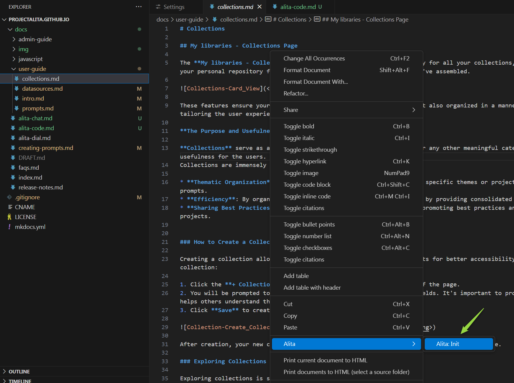
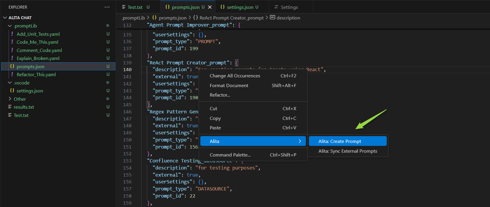
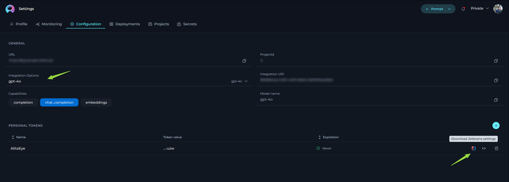
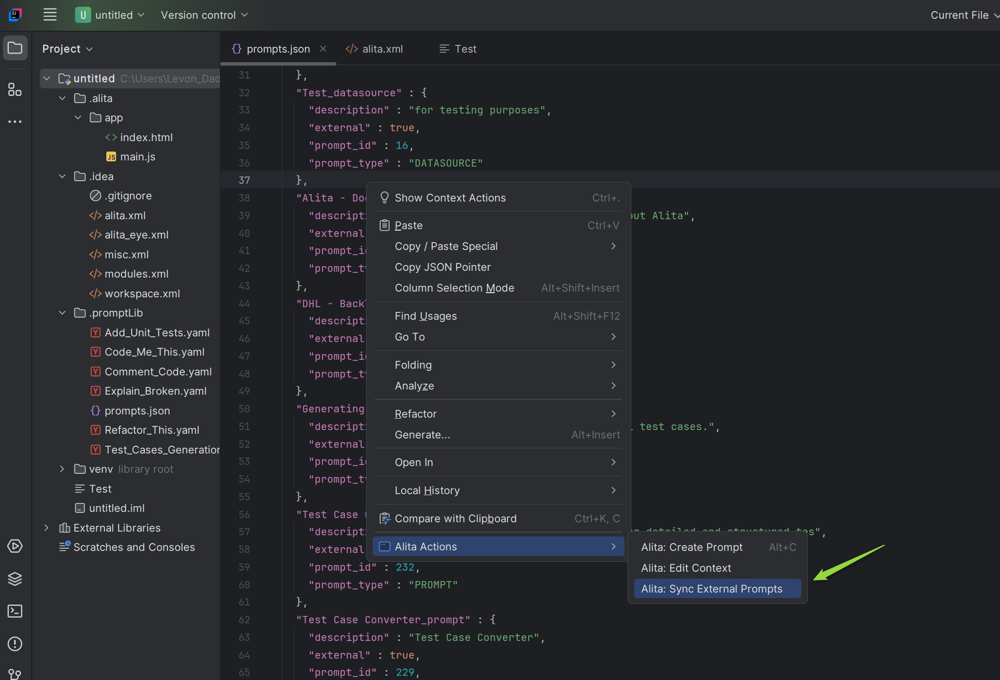
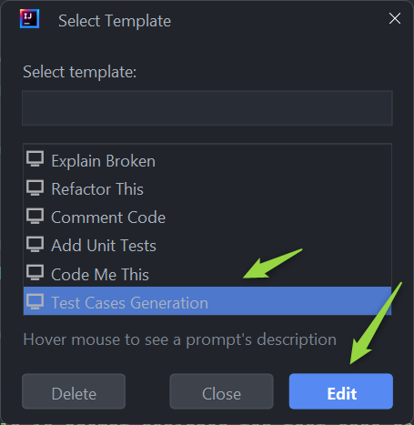

Alita Code
Get Started with Alita Code
Welcome to the Alita Code your comprehensive resource for harnessing the power of the ultimate AI-powered IDE extension that's set to transform your coding workflow. Alita Code integrates seamlessly with VS Code amd InteliiJ, offering intelligent suggestions, automating routine tasks, and providing a level of adaptability that's unmatched, all designed to elevate your coding experience.
Why Choose Alita Code?
Alita Code is not just another IDE extension. It's a revolutionary tool designed to:
- Boost Productivity - with AI-powered suggestions, Alita Code analyzes your code in real-time, offering insights to enhance code quality, readability, and performance.
- Automate Testing and Documentation - simplify the creation of unit tests, integration tests, and automated tests. Alita Code also enriches your code with automatic commenting, making it more accessible and maintainable.
- Customizable Assistance - tailor Alita Code's assistance to your project's specific needs with customizable prompts, both internal and powered by Alita Backend's llms for external prompts.
Key Features
Alita Code comes packed with features designed to streamline your development process:
- AI-powered code suggestions for smarter coding
- Automated generation of unit tests, integration tests, and automated tests
- Automatic code commenting for better maintainability
- Customizable internal prompts for tailored assistance
- Project-specific external prompts and datasources powered by ELITEA Backend
- Code explanation and optimization recommendations
- Seamless native IDE integration
- Regular updates and enhancements
- Comprehensive documentation and dedicated support
- Collaboration-friendly design for team projects
- Secure and privacy-conscious implementation
Alita Code for VS Code
Alita Code is a visual studio extension to handle prompt-engineering based code generation using ELITEA as a backend.
Installation
Getting started with Alita Code is straightforward and involves a few simple steps:
- Open VS Code and navigate to the Extensions section.
- In the Marketplace, search for Alita Code and click Install.

Configuration on ELITEA HUB
To configure the necessary parameters for the Alita Code extension, follow these steps:
- Go to Settings → Configuration on the ELITEA HUB.
- Click the + icon to create a new token.
- Enter a name and set an expiration date for the token.
- Click Generate to create the token.
- Immediately copy and securely store the generated token; it will not be visible again once you close the pop-up window.
- From the Integration Option dropdown list, select the desired LLM model (e.g., gpt-4, gpt-4o, gpt-4-0125-preview, etc.).
- Once the LLM model is selected, the Download VS Code Settings icon will appear next to the created token.
- Click this icon to download the
settings.jsonfile, which contains all necessary configuration information for integration with VS Code.
Note: The settings.json file includes essential information such as Project ID, ELITEA HUB's URL, LLM model, Integration UID, and the generated token.
Important: Alternatively, you can manually copy and paste all required parameters into the Alita Code extension's settings in VS Code.

Configuration on VS Code
Once Alita Code is installed, setting it up to work with your project in ELITEA HUB involves:
- Open your project in VS Code.
- Navigate to the
.vscodefolder and open thesettings.jsonfile. If this folder does not exist, create it and add asettings.jsonfile. - Open the
settings.jsonfile downloaded from ELITEA HUB. - Copy all information from this file into the
.vscode/settings.jsonfile in your project. Note: Be careful not to overwrite other configurations. If previous Alita Code configurations exist, remove them before adding new information. - Save the file. The integration settings will now be applied under Alita Code → Extension Settings → Workspace tab.
- Go to Extensions → Alita Code → Extension Settings. Open the Workspace tab and verify that all parameters are correctly populated from the
settings.jsonfile. Note: Manual adjustments can be made if necessary.

Types of Settings in Alita Code
Alita Code offers two types of settings to cater to different needs:
- User Settings: These are global settings that apply to all sessions across any workspace, providing a consistent environment across your projects.
- Workspace Settings: These are specific to a particular workspace, allowing for tailored configurations such as different project IDs or models, which is essential for managing separate environments or specific tasks.
The following settings are available in both tabs (which can either be prepopulated or manually configured):
- Alitacode: Provider Server URL: Enter the URL of your LLM service provider. For connecting to ELITEA HUB, use
https://alita.lab.epam.com. - Alitacode: Auth Token: Provide your API Key or Bearer token for authentication with the LLM service provider. For ELITEA HUB, input the generated Token.
- Alitacode: Model Name: Select the desired LLM model from the dropdown list provided.
- Alitacode: Custom Model Name: If the required model is not listed, enter a custom model name for local prompts.
- Alitacode: Custom Model Tokens: Specify the maximum tokens for local prompts, with a default setting of 4096 tokens.
- Alitacode: Project ID: Input the Project ID for the ELITEA backend. This setting is ignored when using OpenAI.
- Alitacode: Integration Uid: Enter the Integration UID from the ELITEA backend. For ELITEA HUB, use the Integration UID provided by Alita lab. This setting is ignored for OpenAI.
- Alitacode: Max Tokens: Set the maximum number of tokens for the selected model.
- Alitacode: Temperature: Adjust the temperature setting for the selected model to control the randomness of the output.
- Alitacode: Default View Mode: Choose how the prediction results are displayed:
- append - when you run
Alita Predictthe results will be displayed after the text or part that you have selected. - split - when you run
Alita Predictthe results will be displayed in a separate place (view). - replace - when you run
Alita Predictthe results will be displayed instead of the text or part that you have selected. - prepend -when you run
Alita predictthe results will be displayed before the text or part that you have selected. - Alitacode: Top P: Set the Top P value for the selected model.
- Alitacode: Top K: Set the Top K value for the selected model.
- Alitacode: Verify Ssl: Toggle this setting to verify the LLM service provider's SSL certificate. For ELITEA HUB, keep this checkbox not selected.
- Alitacode: Enable: Toggle to enable or disable the Alita Code extension as needed.
These settings ensure that Alita Code is properly configured to interact with the ELITEA HUB, allowing for seamless integration and efficient use of LLM models within your projects.
Note: Restarting VS Code may be necessary for changes to take effect.
Configuring Alita Code
To initialize Alita Code in your project:
- Open any file and right-click to select Alita → Alita:Init.
- This creates a
.promptLibfolder with default prompts andprompts.jsonfiles.

Alita Code Usage
Getting Started with Extension Commands
Jumpstart your Alita Code experience with these essential commands:
- Alita: Init: Initialize Alita Code in your workspace by creating a
.promptLibfolder at the root. Note: After successful initalization theAlita: Initcommand becomes unavailable. - Alita: Create Prompt: Craft a new prompt within the
.promptLibfolder. - Alita: Extend Context: Enhance the context of an existing prompt in the
.promptLibfolder. - Alita: Predict: Choose from a list of prompts and generate predictions based on your selection.
- Alita: Sync External Prompts: Synchronize your external prompts and datasources with ELITEA Backend.
Alita Code is designed to be your coding companion, offering a blend of AI-powered efficiency and customizable support. Whether you're looking to enhance your productivity, streamline your testing process, or simply make your code more understandable, Alita Code is here to help. Let's embark on this journey to revolutionize your coding experience together.
Synchronize External Prompts
Sync prompts and datasources created in the Alita HUB with your Alita Code setup for seamless integration:
- Open
prompts.json: Locate and open theprompts.jsonfile. - Access Alita Menu: Right-click in the editor to see the Alita menu option.
- Sync Prompts Option: Select
Alita: Sync External Promptsfrom the submenu. - Synchronization: The prompts and datasources will be synced and added to the
prompts.jsonfile. - Usage: These prompts and datasources are now ready to be used with
Alita: Predictcommand.
Note: To sync and use prompts and datasources from ELITEA HUB, tag the prompt with code in ELITEA HUB.
Create a Prompt
Creating a custom prompt in Alita Code allows you to tailor Gen AI suggestions to your specific tasks. Here's how to create one:
- Open a File: Start by opening any file from your project, or create a new one.
- Access Alita Menu: Right-click in the editor view to bring up the context menu, where you'll find the Alita item.
- Create Prompt Option: Hover over Alita in the menu, and on the second level menu, select
Create Prompt. - Name Your Prompt: Enter a name for your prompt-template, such as "Generate unit-tests".
- Describe Your Prompt: Press Enter and provide a description for your prompt.
- Provide Prompt Content: Press Enter again and input the content of your prompt. This can be modified later in the
.promptLibfolder. - Finalize Creation: Hit Enter to finalize. Alita will add a reference to the new prompt in
prompts.jsonand create a corresponding.yamlfile in the.promptLibfolder, which can be edited to extend content and add examples.

Extend Prompt Context
Enhance the context of an existing prompt with selected text from your code, improving the relevance of AI suggestions:
- Open and Select: Open any file from your project and select a portion of the text.
- Access Alita Menu: Right-click to open the context menu and find the Alita item.
- Extend Context Option: Hover over Alita and select "Extend Context" from the submenu.
- Choose a Prompt: Pick the prompt you wish to extend the context for from the dropdown list.
- Extend Context: The selected text will be automatically added to the prompt's context, enriching its understanding for future suggestions.
Predict (Execute) Prompt
To predict (execute) a prompt or a datasource directly from VS Code to generate Gen AI-driven code suggestions:
- Open a File and Select Text: Open any project file and select the text you want to analyze or for which you need suggestions.
- Access Alita Menu: Right-click in the editor view to see the Alita menu item.
- Predict Option: Hover over Alita and choose
Alita Predictfrom the submenu. - Select a Prompt or Datasource:
- Choose the desired prompt or datasource from the dropdown list.
- Version Selection: Prompts may have multiple versions. Ensure you select the appropriate version from the dropdown list as different versions may vary in functionality and variables.
- Variable Management: If the selected prompt version includes variables, you will either see prepopulated values or you can provide your own values. Ensure that all required variables are correctly filled to execute the prompt accurately.
- View Predictions: After execution, the generated response will be displayed in your editor according to the method specified in your Alita Code: Default View Mode settings. This could be appended, replaced, split, or prepended based on your configuration.


Note: You can use default prompts, those you've created, or external prompts and datasources synced from ELITEA HUB.
AlitaCode for IntelliJ Idea
AlitaCode is a IntelliJ plugin to handle prompt-engineering based code generation using ELITEA as a backend.
Installation
Getting started with Alita Code is straightforward and involves a few simple steps:
- Navigate to the Settings→Plugins section in IntelliJ.
- Search for AlitaCode in the Marketplace and click Install.

Configuration on ELITEA HUB
To configure the necessary parameters for the Alita Code extension, follow these steps:
- Go to Settings → Configuration on the ELITEA HUB.
- Click the + icon to create a new token.
- Enter a name and set an expiration date for the token.
- Click Generate to create the token.
- Immediately copy and securely store the generated token; it will not be visible again once you close the pop-up window.
- From the Integration Option dropdown list, select the desired LLM model (e.g., gpt-4, gpt-4o, gpt-4-0125-preview, etc.).
- Once the LLM model is selected, the Download Jetbrains Settings icon will appear next to the created token.
- Click this icon to download the
alita.xmlfile, which contains all necessary configuration information (except generated token) for integration with IntelliJ.

Configuration on IntelliJ
Once Alita Code is installed, setting it up to work with your project in ELITEA HUB involves:
- Open your project in IntelliJ.
- Navigate to the
.ideafolder and open thealita.xmlfile. If this folder does not exist, create it and add aalita.xmlfile. - Open the
alita.xmlfile downloaded from ELITEA HUB. - Copy all information from this file into the
.idea/alita.xmlfile in your project. Note: If previous Alita Code configurations exist, remove them before adding new information. - Save the file. The integration settings will now be applied under Settings → Tools → Alita tab.
- Go to Settings → Tools → Alita. Open it and verify that all parameters are correctly populated from the
alita.xmlfile. - Copy and paste generated token to the LLM Auth Token field.
- Check and apply configuration:
- Click the Reload icon next to the Integration Name dropdown list.
- Select the
ai_dialas integration and click OK button.
- To complete the setup click the OK button.

Settings in Alita Code
Alita Code includes the following settings:
- LLM Provider: Select the LLM Provider. To connect with ELITEA Hub, select
Alitaoption. -
- LLM Auth Token: Provide your Bearer token for the LLM service provider.
- Provide Settings
- Project ID: Enter the Project Id for ELITEA Backend, ignored for OpenAI.
- LLM Server URL: Enter the URL to your LLM service provider. (e.g.
https://alita.lab.epam.com/) - Integration Name: To use Epam AI Dial models, select
ai_dialoption. - Integration UID: Enter the AI integration Id from ELITEA Backend, ignored for OpenAI.
- LLM Model Name: Choose the LLM model from the dropdown list.
- Custom Model Name: Enter a custom model name if the desired model is not listed. Check the Use custom model checkbox.
- Display Type: Select the default display mode for the predictions.
- append - when you run
Alita Predictthe results will be displayed after the text or part that you have selected. - split - when you run
Alita Predictthe results will be displayed in a separate place (view). - replace - when you run
Alita Predictthe results will be displayed instead of the text or part that you have selected. Advanced Settings: - Custom Encoding Type: Select the encoding type, default
cl100k_base. - Custom Model Size: Set the max tokens for custom model, default is
4096. - LLM Response Timeout: Set the response timeout, default is
90seconds. - Max Tokens: Set the max tokens for the selected model.
- Temperature: Adjust the temperature for the selected model.
- Top K: Set the Top K value for the selected model.
- Top P: Set the Top P value for the selected model.


These settings ensure that Alita Code is properly configured to interact with the ELITEA HUB, allowing for seamless integration and efficient use of LLM models within your projects.
Note: Restarting IntelliJ may be necessary for changes to take effect.
Configuration
To initialize Alita Code in your project:
- Open any file and right-click to select Alita → Alita:Init.
- This creates a
.promptLibfolder with default prompts andprompts.jsonfiles.

AlitaCode Usage
Getting Started with Extension Commands
Jumpstart your Alita Code experience with these essential commands:
- Alita: Init: Initialize Alita Code in your workspace by creating a
.promptLibfolder at the root. Note: After successful initalization theAlita: Initcommand becomes unavailable. - Alita: Create Prompt: Craft a new prompt within the
.promptLibfolder. - Alita: Extend Context: Enhance the context of an existing prompt in the
.promptLibfolder. - Alita: Predict: Choose from a list of prompts and generate predictions based on your selection.
- Alita: Sync External Prompts: Synchronize your external prompts and datasources with ELITEA Backend.
Synchronize External Prompts
Sync prompts and datasources created in the ELITEA HUB with your Alita Code setup for seamless integration:
- Open
prompts.json: Locate and open theprompts.jsonfile. - Access Alita Menu: Right-click in the editor to see the Alita Actions item.
- Sync Prompts Option: Select the Alita: Sync External Prompts option from the submenu.
- Synchronization: The prompts and datasources will be synced and added to the
prompts.jsonfile. - Usage: These prompts and datasources are now ready to be used with
Alita: Predictcommand.

Note: To sync and use prompts and datasources from ELITEA HUB, tag the prompt with code in ELITEA HUB.
Create a Prompt
Creating a custom prompt in Alita Code allows you to tailor Gen AI suggestions to your specific tasks. Here's how to create one:
- Open a File: Start by opening any file from your project, or create a new one.
- Access Alita Menu: Right-click in the editor view to bring up the context menu, where you'll find the Alita Actions item.
- Create Prompt Option: Hover over Alita Actions in the menu, and on the second level menu, select Alita: Create Prompt. The Create Prompt window is opened:
- Name: Assign a descriptive name that clearly reflects the aim of the prompt.
- Description: Summarize the purpose of the prompt, detailing what it intends to achieve.
- Context: Well crafted prompt corresponding to well-acceppted Frameworks for creating prompts (e.g. CREATE, CRISPE, Elavis Saravia, etc.). In case the prompt's context contains Variables, then provide the names and values of the variables in the Variables section.
- Click the Use the project integration settings in the context file checkbox to configure Model, Top-P, Top-K, Tempreature and MaX Tokens settings.
- Click the Ok button to create a prompt. This can be modified later in the
.promptLibfolder. Alita Code will add a reference to the new prompt inprompts.jsonand create a corresponding.yamlfile in the.promptLibfolder, which can be edited to extend content and add examples.

Edit Prompt Context
Enhance the context of an existing prompt with selected text from your code, improving the relevance of AI suggestions:
- Open and Select: Open any file from your project and select a portion of the text.
- Access Alita Menu: Right-click to open the context menu and find the Alita Actions item.
- Edit Context Option: Hover over Alita Actions and select Alita: Edit Context from the submenu.
- Choose a Prompt: Select the prompt you wish to modify for from the list and click the Edit button.
- Edit Context The selected prompt's
yamlfile will be opened where you can make the changes.

Predict (Execute) Prompt
To predict (execute) a prompt or a datasource directly from VS Code to generate Gen AI-driven code suggestions:
- Open a File and Select Text: Open any project file and select the text you want to analyze or for which you need suggestions.
- Access Alita Menu: Right-click in the editor view to see the Alita Actions item.
- Predict Option: Hover over Alita Actions and choose Alita: Predict from the submenu.
- Select a Prompt or Datasource:
- Choose the desired prompt or datasource from the dropdown list.
- Version Selection: Prompts may have multiple versions. Ensure you select the appropriate version from the dropdown list as different versions may vary in functionality and variables.
- Variable Management: If the selected prompt version includes variables, you will either see prepopulated values or you can provide your own values. Ensure that all required variables are correctly filled to execute the prompt accurately.
- View Predictions: After execution, the generated response will be displayed in your editor according to the method specified in your AlitaCode: Display Type.

Note: You can use default prompts, those you've created, or external prompts and datasources synced from ELITEA HUB.